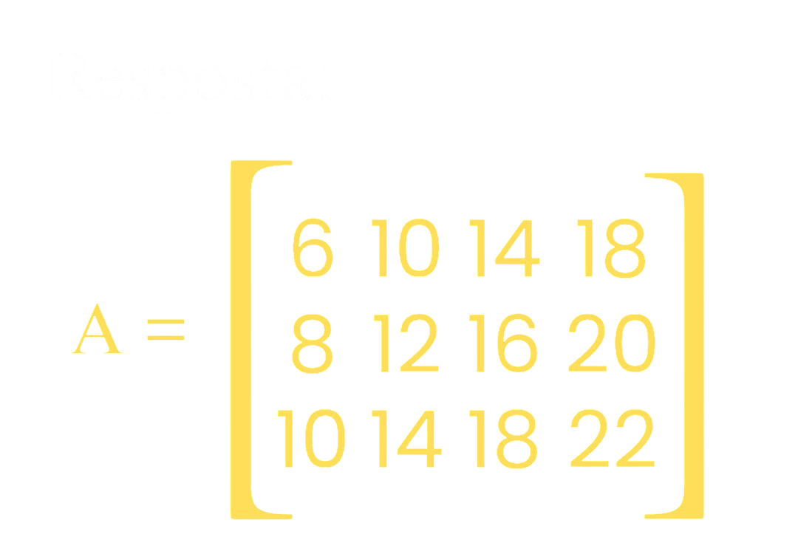
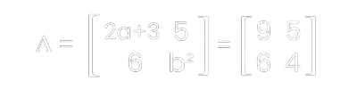

Exercícios guiados
1 - Dê a matriz de ordem 3x4 tal que aij=2i+4j;


- 1 - Monte a matriz 3x4 igual ao primeiro quadro.
- 2 - Calcule cada elemento pela expressão indicada, por exemplo, para calcular a¹¹ monte em a¹¹ = 2*1+4*1, colocando linha e coluna no lugar de i & j.
- 3 - Monte a matriz resultado, substituindo os elementos da original pelos resultados da expressão.
2 - Calcule a e b sabendo que;

Passos do aprendizado;
- 1 - Mapeamento;
- O elemento 2a+3 está na posição a¹¹
- O elemento b² está na posição a²²
- 2 - Monte uma equação simples: 2a+3 = 9, pois sabemos que o resultado tem que ser igual a matriz do lado direito.
2a + 3 = 9
Remova primeiro as somas e subtrações, em seguida, as multiplicações e divisões, logo passamos o + 3 para o outro lado subtraindo;
2a = 9 - 3
Simplificação: Resolvemos a conta básica;
2a = 6
Divisão final: O 2 que multiplica o a passa para o outro dividindo;
a = 6⁄2
a = 3
Ou seja, o resultado de a é 3.
Calculando o valor de b²
Fazemos a mesma lógica
b² = 4
O contrário de elevar ao quadrado (potencia 2) é a raiz quadrada, sempre se usa raiz quadrada
b = √4
a = 3
b = 2